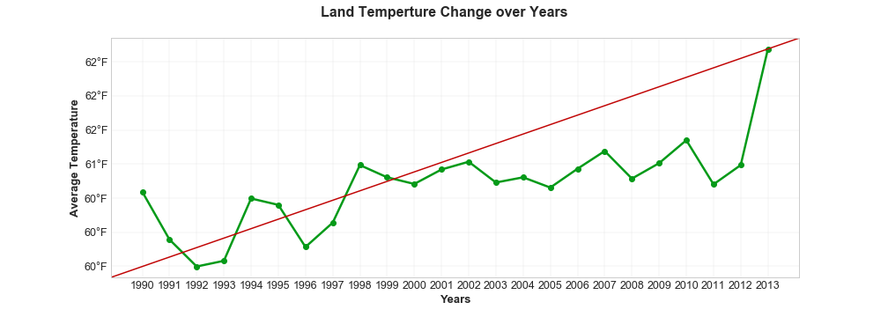

Natural Disasters over the Year
The aim of this project is to analyze if change in land temperature over years has an effect on natural disasters, the amount of events and the magnitude of their effect.
On this page, fours graphs represent the relationship between the amount of natural disasters and climate changes.
Global Temp Changes 1990-2013

While global warming has been trumpeted as an epic climate change crisis with human-produced CO2, a trace atmospheric “greenhouse gas” branded as a primary culprit and endangering “pollutant," remember that throughout earlier periods of Earth’s history CO2 levels have been between four and eighteen times higher than now, with temperature changes preceding, not following atmospheric CO2 changes.
Number of Tsunamis over Years
Tsunamis can be generated by any significant displacement of water in oceans or lakes, though are most commonly created by the movement of tectonic plates under the ocean floor, during an earthquake. But they can also be caused by volcanic eruptions, glacial carving, meteorite impacts or landslides.
Number of Volcano Eruptions over Years

This graph diosplays the number of fatal incidents recorded in a 23-year period, from 1990 to 2013. The increasing number of fatal incidents occurring can be attributable to improved recording of all volcanic events (both fatal and non-fatal), along with a real increase in the number of fatal incidents.
Number of Earthquakes over Years
Since the earthquake is a fairly frequent occurrence in nature, a graph was made to only display earthquakes with magnitude of 5.5 or higher, during the years 2000 to 2013 for certain countries. The y axis respresents the number of earthquakes, and the x axis represents the years. It can be seen that this number grows over the years.